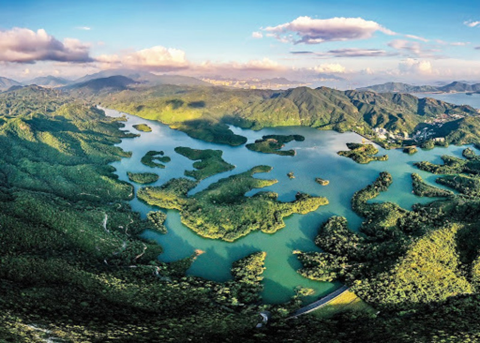

Welcome
Home Page
Login
KMB Bus Route
NWFB Bus Route
Message Board
Qiandao Lake

Qiandao Lake refers to Dalanyong Reservoir. It was completed in 1957 and its original site was a hilly river valley. After the water is stored, more than ten large and small islands are formed, forming a beautiful scenery of the green "Qiandao Lake". The Fisheries and Conservation Department added the "Qiandao Lake Clear View Terrace" in 2019. You can enjoy the beautiful scenery of the lake island on the stage, and it immediately became a hot spot for mountain friends.
Qiandao Lake check-in route details
Route: So Kwan Wat -> So Kwan Wat Village Road -> MacLehose Trail Section 10 -> Tai Lam Chung Reservoir Dam -> Thousand Island Lake Qingjing Terrace (check-in point) -> Tai Tong Shan Road -> Tai Tong Bus Stop
Difficulty: ★★☆☆☆
Time: about 3 hours